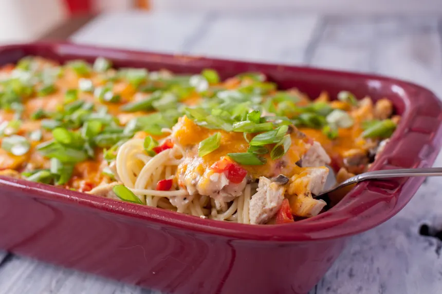
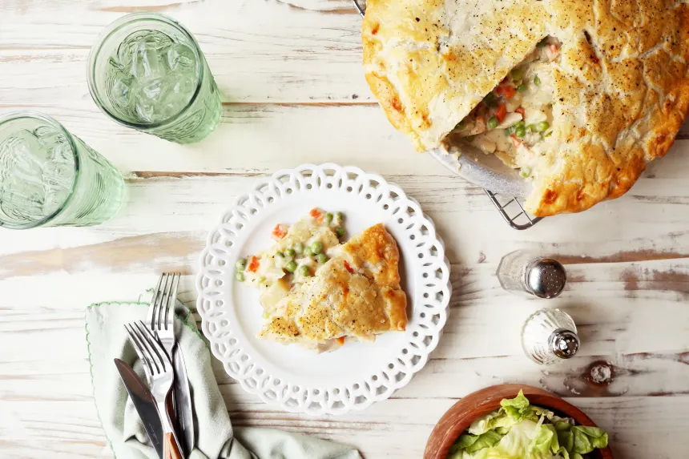

Ro-tel Chicken Spaghetti

Total Time: 50 mins
Makes: 1
Author: Anita Harris
Ingredients
- 4-6 chicken breasts, cooked & chopped
- 1 can cream of mushroom soup
- 1 can chicken broth
- 1 can Ro-Tel tomatoes
- 1 lb Velveeta cheese, cubed
- 12 ounces spaghetti, cooked & drained
Instructions
-
In a bowl mix together the soup, broth & Ro-tel tomatoes.
-
In a 13x9 greased casserole dish layer as follows: Spaghetti,
Chicken, Soup mix, Cheese.
-
Bake in a preheated 350 degree oven until heated through and
cheese melts about 30-45 minutes.
-
As soon as you remove from the oven stir to mix well, adding
salt and pepper to taste.
Back to top
Go to recipe 2
Go to recipe 3
Delicious Chicken Pot Pie

Total Time: 1hr 45 mins
Makes: 1
Author: Vincy Bramblett
Ingredients
- 1 cup potato, diced
- 1 cup onion, diced
- 1 cup celery, diced
- 1 cup carrot, diced
- 1⁄3 cup melted margarine
- 1⁄2 cup all-purpose flour
- 2 cups chicken broth
- 1 cup half-and-half
- 1 teaspoon salt
- 1⁄4 teaspoon pepper
- 4 cups chicken, cooked and chopped
- 2 pie crusts (either store bought or your own recipe)
Instructions
-
Preheat oven to 400°F.
-
Saute onion, celery, carrots and potatoes in margarine for
10 minutes.
-
Add flour to sauteed mixture, stirring well, cook one minute
stirring constantly.
-
Combine broth and half and half.
-
Gradually stir into vegetable mixture.
-
Cook over medium heat stirring constantly until thickened
and bubbly.
-
Stir in salt and pepper; add chicken and stir well.
-
Pour into shallow 2 quart casserole dish and top with pie
shells.
-
Cut slits to allow steam to escape.
-
Bake for 40-50 minutes or until pastry is golden brown and
filling is bubbly and cooked through.
Back to top
Go to recipe 3
Ranch and Avocado Pasta Salad

Total Time: 25 mins
Makes: 1
Author: Shuzbud
Ingredients
- 0.5 (1/4 ounce) package hidden valley ranch dressing mix
- 1⁄8 cup milk
- 1⁄8 cup mayonnaise
- 3⁄4 cup dry pasta (Farfalle works nicely)
- 1⁄4 avocado, cut into small cubes
- 2 1⁄2 cherry tomatoes, quartered
- 1⁄4 cup cooked chicken, cubed
- 1⁄8 cup cooked bacon, cut into pieces
Instructions
-
Mix the Ranch dressing mix with the milk and mayonnaise and
leave in the fridge to thicken. If you have time, prepare the
Ranch dressing a few hours beforehand to allow the flavours
to blend.
-
Cook the pasta.
-
Mix the pasta with the Ranch dressing, avocado, cherry tomatoes
and meats.
-
Enjoy!
Back to top
Go to recipe 2